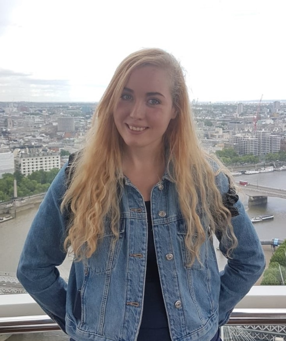

Helene Bliksvaer Hansen

I am a Bachelor graduate in Interactive Media, and a seasoned QA tester, now looking to progress further and become a web developer. I’ve been working on big titles
since joining the industry in teams of all sizes, having large responsibility ensuring milestone deliverables are being met, as
well as working well with my colleagues, taking charge when necessary and teaching more junior staff how to do the work
in the business. Additionally I have worked closely with the different departments and therefore got vast experience when it comes
to the issues arising and how to solve them efficiently. Since joining the industry, I have been working in Localisation QA
(LQA) as a Tester, Team Lead and Project Manager at Universally Speaking, and currently working as a QA Tester at The
Chinese Room (Sumo Digital), having my hands in projects like Beat Saber, Mafia: Definitive Edition and many, many more.
This has given me vast experience working with teams both internally and externally.
Skills
- Great HTML skills, and dabbled in C# and C++.
- Highly experienced with a wide variety of management
tools, such as Jira, Confluence, ADO and TestRail.
- Excellent written and verbal communication skills with
internal teams and external stakeholders.
- Able to provide detailed bugs to all departments with
thorough reproduction steps, relevant media, logs, and
additional notes that can provide necessary help and
thoughts regarding origin of issue for multiple platforms.
- Experienced with tools and processes following the
pipeline standard within the games industry, which makes me an exceptional team
player, working closely and efficiently with all departments
in the field.
Experience
LQA Tester, Lead and Project Manager, Universally Speaking
June 2020 - October 2021
Initially started testing while being an acting senior/lead until a large-scale project ended, then became LQA Lead, managing
multiple teams simultaneously to ensure all work is done to the highest of standards and finished by the strict deadlines, then
lastly LQA Project Manager, managing multiple leads across a high volume of projects outsourced to us from companies
such as Bandai Namco, 2k and Sony.
- Main point of contact for both external clients and internal team leads, gathering information, structuring
projects to ensure success and nurturing strong relationships between external partners and my department.
- Overhauling internal time and finance management systems to improve profit margins without sacrificing the quality
of work and ensure that projects are completed to a high standard before the established deadlines.
- Led teams of testers and linguist specialists, managed communications between different departments of the
company, and created detailed instructions and test plans.
- Always pushed through stressful and high-pressure projects with a variety of testers at my disposal, both
experienced and inexperienced, as well as transferred my polished skills to my team members to teach them to
create high quality issue reports. Kept a high standard of work done for longer projects, without faltering on quality.
QA Tester, The Chinese Room (Sumo Digital)
October 2021 – Present
I’m currently working as a QA Tester, mainly testing on PC, but also having tested current gen consoles extensively.
Essentially acting as a senior, as in addition to doing everyday QA smoke tests and bugging, I am teaching hire-ons,
providing crucial documentation deliverables and preparing plans for current and future internal and external QA needs.
- Assisted building the QA team from ground up, put in the bugging standards in ADO, integrated and built TestRail plans,
established our position and workflow with the Production team which I then passed on to newer QA.
- Pushed through numerous milestones, ensuring the sprint goals have been met and are to a high standard so the
development team can move onto future work tasks smoothly.
- Gained extensive knowledge regarding how earlier development functions into alpha and beta, testing both
gameplay to ensure it feels intuitive and fun, keeping close attention to performance and ensuring the vision of the
game is being met.
Education
Bachelor Interactive Media – Games at Noroff University College
Learned to use all tools in the game development pipeline (which included Visual Studio)
About Me
I’m a Norwegian woman with a burning passion for software development and the joy of creating. My spare time goes to study programming and developing websites, to both
extend my knowledge and to be able to create everything I desire. I want to make all sorts of websites and apps that will be for my own benefit and others,
but I don't want to stop there, since I also want to code and design my own games in my spare time.
I also love trying to be as active as possible and I am a diehard animal lover (so dogs in office is always a bonus!)